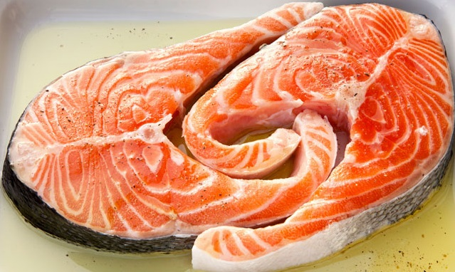
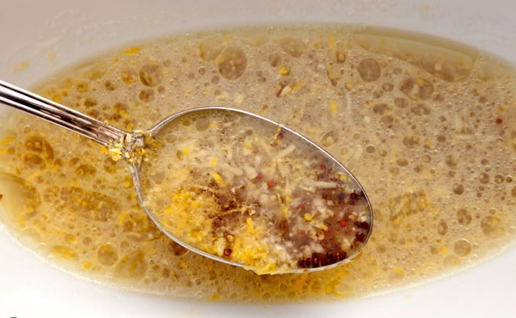
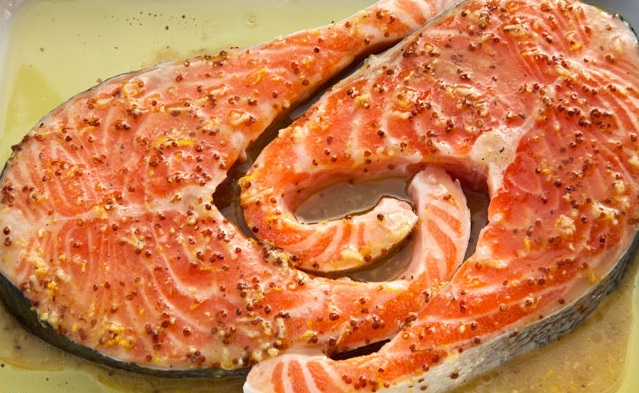
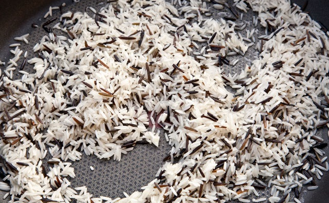
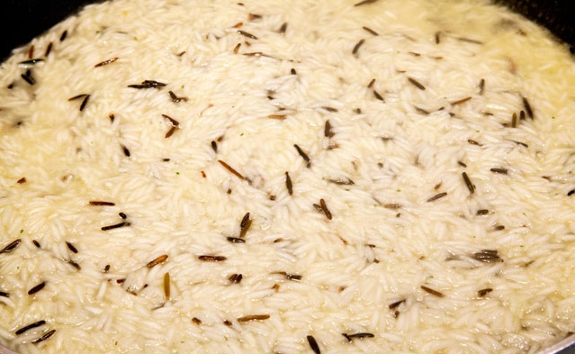

Am pus rondelele de somon într-un vas termorezistent.

Am amestecat într-un bol coaja rasă de lămâie, sucul de lămâie, uleiul de măsline, ghimbirul ras, mierea de albine și muștarul cu boabe.

Am uns somonul cu acestea, apoi l-am condimentat cu sare de mare și piper proaspăt măcinat.

Am pus vasul în cuptor, la 210 °C pentru 15-20 minute, controlând după 15 minute dacă este auriu și ferm când îl apăsăm cu furculița. Am mutat vasul în cuptor pe rândul cel mai ridicat pentru 2-3 minute – am stat cu ochii pe vas să nu ard peștele. Dacă este gata se închide cuptorul și se lasă vasul în cuptor, la căldură, până asamblăm farfuria, mutând vasul către mijlocul cuptorului. Chiar dacă este oprit cuptorul, peștele continuă să se gătesacă la căldură.
Imediat cum am pus somonul la cuptor pregătim orezul basmati. În uleiul încins călim orezul cu usturoiul, amestecând continuu timp de 1-2 minute, până se călește puțin orezul.

În acest moment turnăm supa și apa fierbinți și lăsăm la foc mediu-mic să fiarbă până se absoarbe lichidul (în 15 minute este gata), apoi oprim focul, condimentăm cu sare și piper, adăugăm cubul de unt și acoperim cu un capac.

Tocam partea verde de la ceapa foarte fin, patrunjelul verde la fel, le punem in orez si amestecam pana se omogenizeaza.
Punem pe farfurie orezul, apoi pestele si servim.